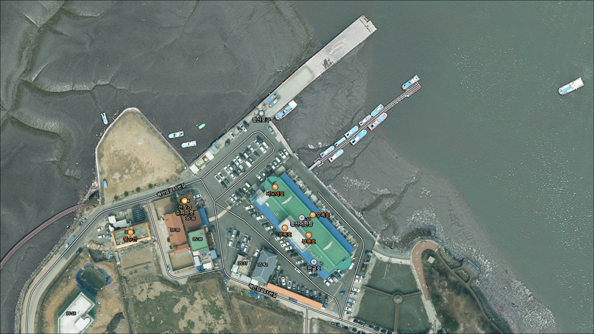
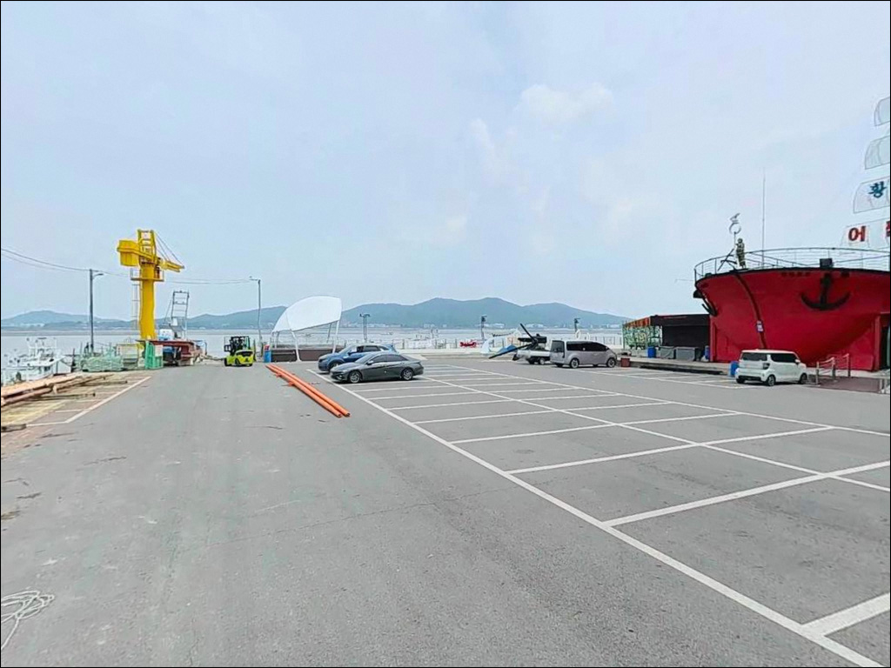
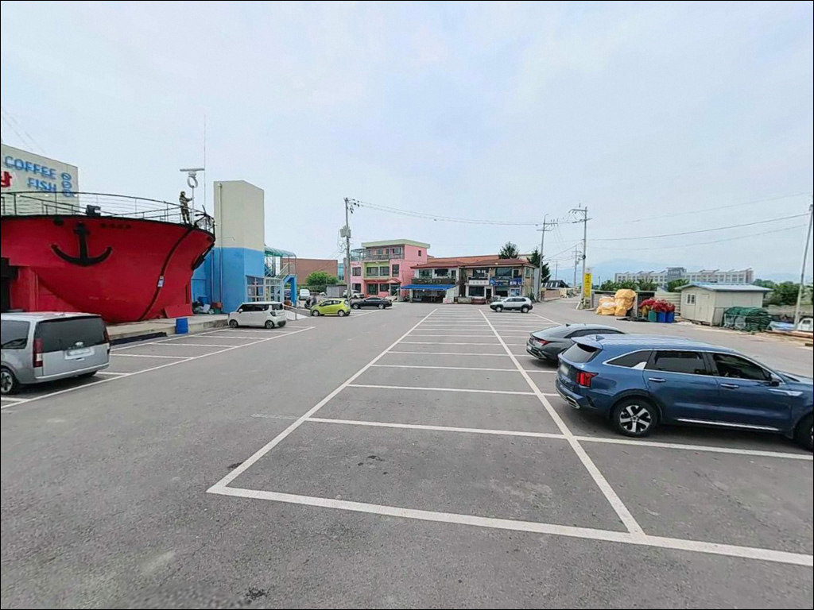
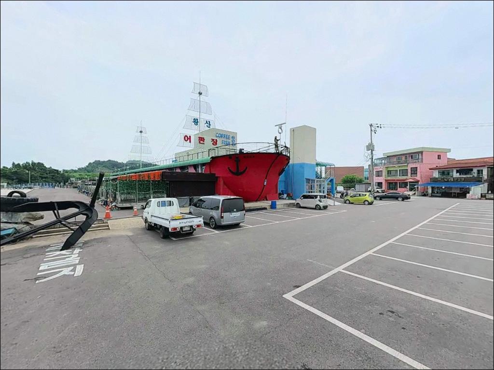
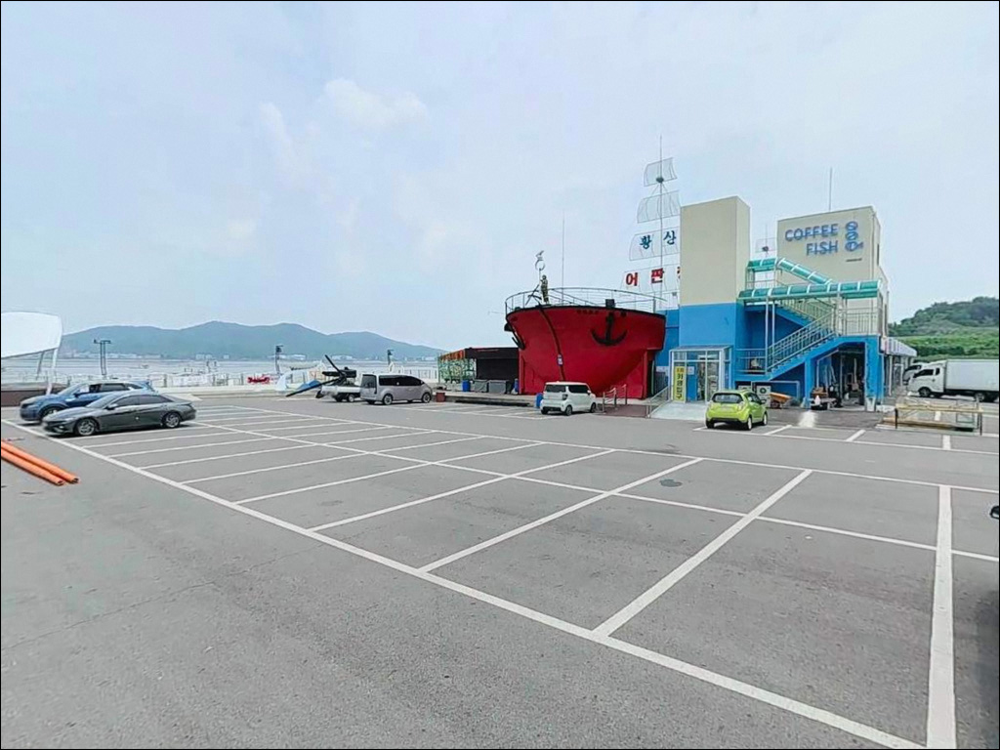
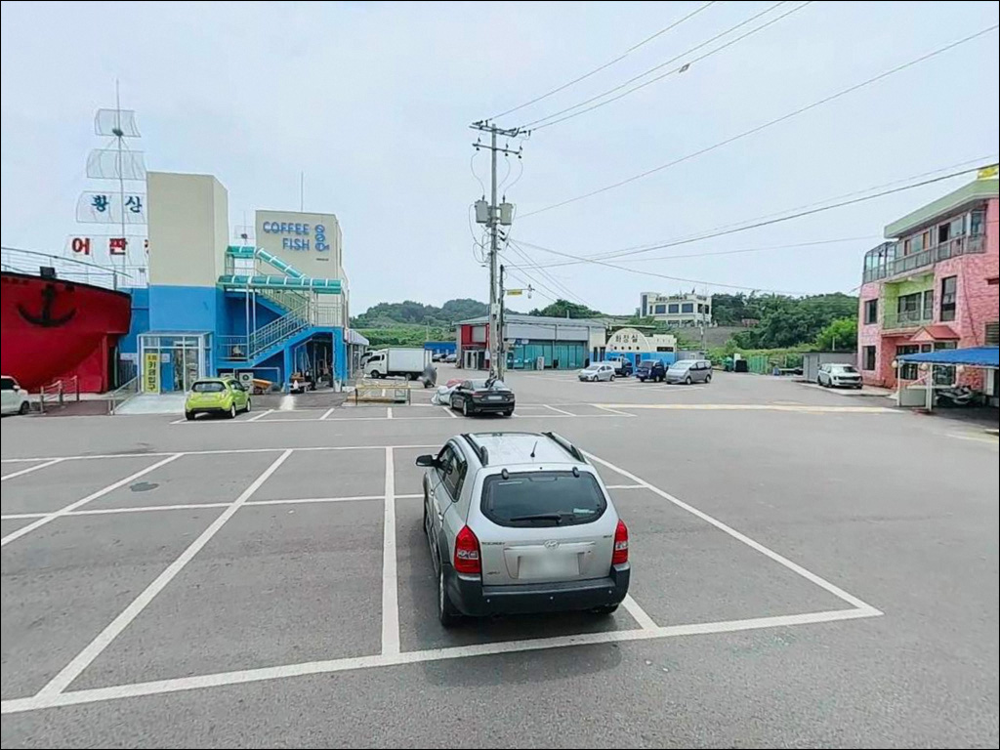
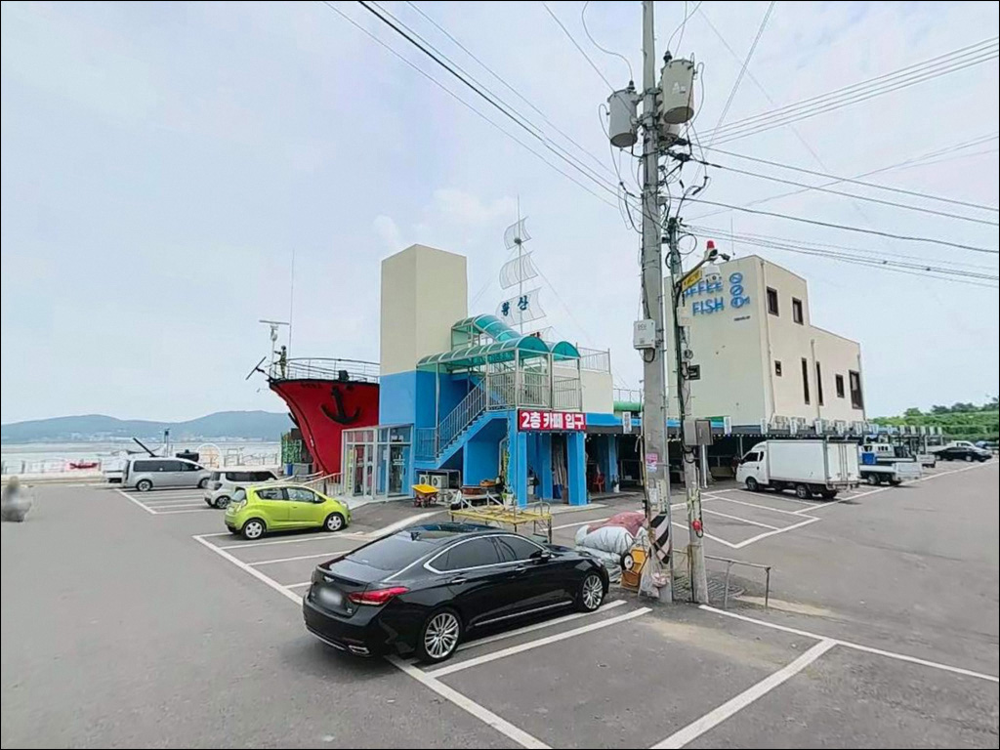
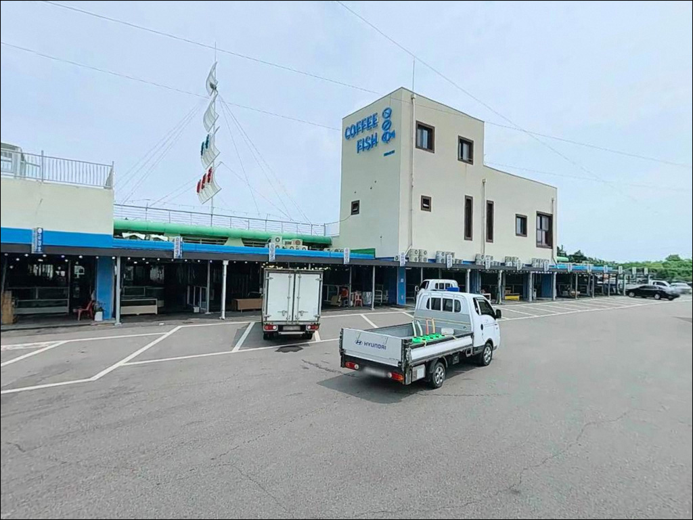
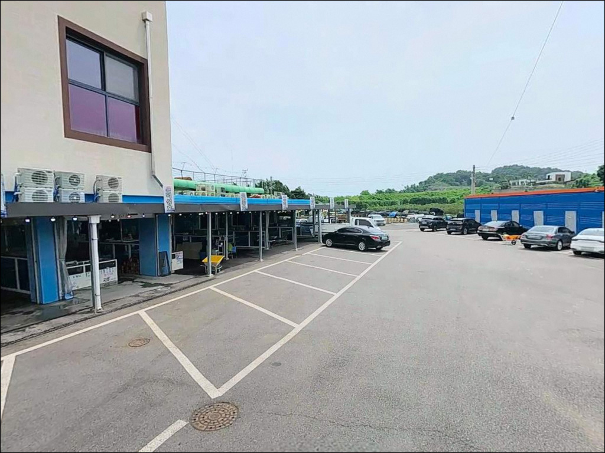

황산포구, 강화도 인천 강화군 잔잔한 물결과 어울리는 차박, 낚시 한적한 포인트


포인트 안내
강화 남단 갯벌 포인트는
밀물 타이밍을 놓치면
어떤 채비로도 낚시 자체가 성립하지 않습니다.
황산포구는 간조 시 광범위한 갯벌이 드러나는 구조로,
물때 확인이 입장 판단의 전부를 결정하는 곳입니다.
인천 강화군 길상면 초지리,
초지대교 인근 연륙교로 연결된 황산도에 자리한 포구입니다.
강화도 본도와 연결된 작은 섬의 소형 어항으로,
2020년부터 2022년까지 어촌 뉴딜 300 사업을 통해
물양장 조성과 선착장 정비가 완료된 곳입니다.
이 글은 황산포구의 진입 환경,
차박 체류 여건, 낚시 지형 분석,
어울리는 낚시 스타일을 중심으로 정리했습니다.
조황 단정이나 특정 어종 보장은
이 글의 범위에 포함되지 않습니다.

1. 진입 동선과 포인트 접근성
강화도 본도에서 황산도로 들어가려면
해안남로를 타고 연륙교를 건너야 합니다.
연륙교 길이는 약 500m 수준이며,
초지대교에서 가까운 위치라
강화도 진입 자체는 무난한 편입니다.
다만 연륙교를 건넌 이후
포구까지 이어지는 섬 내부 도로는
소형 마을길 수준으로 폭이 좁은 편입니다.
대형 SUV나 캠핑 장비를 실은 차량이라면
출발 전 위성지도로 진입 구간을
먼저 확인하고 가는 것이 좋습니다.
주차는 뉴딜 사업으로 새로 조성된
물양장 접안 구역 주변을 활용하는 방식이
가장 현실적인 선택입니다.
어선 작업 동선과 겹치지 않는 자리를
현장에서 직접 확인한 뒤 주차하는 것이 기본입니다.
해안 산책로 데크 입구 쪽에도
공간이 있을 가능성이 있습니다.

2. 차박 환경과 야간 체류 여건
황산도는 민가 밀집도가 낮은 소규모 어촌 마을입니다.
야간에는 차량 통행이 거의 없고
한산한 분위기가 유지될 가능성이 높습니다.
뉴딜 사업으로 조명이 일부 개선됐다는 정보가 있어
예전보다는 야간 시인성이 나아진 편으로 보이나,
개인 헤드랜턴은 반드시 준비해야 합니다.
어판장과 물양장이 있는 현역 어항 구조라
노지 차박 성격으로 하룻밤 머무는 경우
주차 공간 확보 여부를 현장에서
먼저 확인하는 것이 우선입니다.
강화해협 방향으로 열린 위치라
북서풍 영향을 받는 날은
바람이 상당할 수 있어 기상 확인이 필요합니다.
해안 산책로 데크(약 1.3km)가 조성되어 있어
낚시를 마치고 조용히 머무는 용도로는
나쁘지 않은 분위기입니다.
갯벌이 드러나는 간조 시간대에는
포구 앞 경관이 넓게 트이는 서해 특유의 풍경을
볼 수 있습니다.


3. 주변 편의시설 및 인프라 현황
황산도 포구 반경 1km 이내에는
편의점이나 식당을 기대하기 어렵습니다.
소규모 어촌 마을 구조상 완전 자급 체제로 진입하는 것이
현실적인 준비 방식입니다.
식수, 얼음, 낚시 소품은 출발 전에 갖춰야 합니다.
반경 3km권으로 이동하면
강화도 본도 초지리 해안남로 방향으로
초지항 수산시장과 횟집 거리가 있습니다.
차량으로 5분 이내 거리로 추정되어
부족한 물품이 생겼을 때
초지항 권역을 활용하는 동선이 현실적입니다.
다만 편의점 운영 여부는 출발 전 직접 확인하는 것이 좋습니다.
응급 상황 발생 시 강화읍 방향까지 거리가 있으므로
출발 전 비상약품과 연료는 충분히 챙겨야 합니다.
포구 어판장 주변에는 뉴딜 사업으로
무료 공공 와이파이가 설치된 것으로 확인됩니다.

4. 낚시 가능한 구간에서 놓치기 쉬운 진입 타이밍
황산포구에서 가장 먼저 판단해야 할 것은
물때입니다.
서해 갯벌 환경은 간조 시 광범위하게 뻘밭이 드러나
사실상 낚시가 불가능해집니다.
밀물 시작 시각에 맞춰 현장에 도착하는 것이
이 포인트 출조의 기본 원칙입니다.
바다타임에서 강화도 초지권역 기준 물때를 확인하고
들물이 시작되는 전후 1~2시간을 노려
채비를 준비하는 방식이 효율적입니다.
강화해협은 조류 변화가 빠른 지역으로
기상청 해상 예보도 출발 전 반드시 확인해야 합니다.
어판장과 물양장이 있는 현역 어항이라
어선 출입이 이루어지는 공간입니다.
어선 이동 동선과 어구에 접촉하지 않는 자리를 잡는 것이
기본 매너이며, 야간에는 구명조끼와
헤드랜턴을 반드시 착용해야 합니다.

5. 지형 기반 낚시 여건 분석
황산포구는 강화해협 내만 갯벌 환경에 위치합니다.
썰물 시에는 수 킬로미터까지 갯벌이 드러날 만큼
조차가 큰 서해 내만 특성을 그대로 가진 포인트입니다.
선착장과 물양장 발판 쪽이 외측 갯벌보다
상대적으로 수심이 유지되는 구간으로 보입니다.
초지대교 인근 수로와 강화해협 방향 조류가
들물·날물 변화에 따라 흐르는 위치로,
만조 전후로 조류가 살아나면
포구 앞 수로 라인이 유효한 공략 구간이 될 수 있습니다.
반면 사리 전후 강한 조류 구간에서는
채비 컨트롤이 어려워지는 경우도 있어
조금 전후가 낚시하기 편한 타이밍입니다.
황산포구는 암초성 지형이 아닌 전형적인 갯벌·기수역 포인트입니다.
밑걸림은 적은 편이지만 바닥이 뻘로 이루어진 구간이 많아
채비가 바닥에 묻히는 경우가 생길 수 있습니다.
여분 채비는 넉넉하게 준비하는 편이 좋으며,
최신 조황은 가기 전에 꼭 검색해 보시기 바랍니다.


6. 황산포구 지형에 어울리는 낚시 스타일
이 포인트에서 가장 잘 맞는 낚시는
망둥어·숭어 원투낚시입니다.
강화 초지권역 전반이 가을~초겨울
망둥어 원투낚시 포인트로 알려진 지역이며,
선착장·물양장 발판에서
갯지렁이 채비를 멀리 던져
수로 라인을 노리는 방식이 기본입니다.
숭어 릴찌낚시도 이 환경에 어울리는 스타일입니다.
들물 때 물양장 쪽으로 숭어 무리가 들어올 가능성이 있으며,
장대낚시와 병행하는 방식도 시도해볼 만합니다.
만조 전후 들물 타이밍이 숭어 입질이
살아나는 구간으로 기대됩니다.
붕장어는 야간 원투낚시 대상어로
서해 내만 갯벌 포인트에서 기대해볼 수 있는 어종입니다.
밤낚시 시 물양장 발판에서
바닥을 탐색하는 방식이 이 포인트 구조에 맞습니다.
루어낚시는 갯벌 지형 특성상 반응 기대도가 낮은 편이나,
물양장 구조물 주변에서
간헐적으로 노려볼 수 있는 가능성은 있습니다.

7. 대안 포인트와 플랜 B 동선
황산포구 현장이 여의치 않을 때는
초지항이 첫 번째 대안입니다.
같은 초지권역 해안선을 공유하는 포인트로
차량으로 5분 이내 이동이 가능한 거리입니다.
망둥어 원투낚시 출조 후기가 다수 확인되는 곳으로
주차와 진입 여건도 상대적으로 안정적인 편입니다.
반경 10km권으로 범위를 넓히면
강화도 서남쪽 동검도 해안이 대안이 됩니다.
서해 갯벌 낚시 환경으로
망둥어 시즌 출조가 많은 포인트이며,
황산포구와 비슷한 서해 내만 갯벌 성격을 공유합니다.
창후리 선착장도 강화도 대표 생활낚시 포인트로
알려진 대안 선택지입니다.
황산포구를 처음 방문하는 경우라면
초지항을 기점으로 잡고
황산포구를 병행 탐색하는 동선이
이 권역을 효율적으로 돌아보는 방식입니다.

물때와 계절을 맞추면
황산포구가 달라 보입니다
서해 갯벌형 포인트 특성상
물때 타이밍을 맞추는 것이
이 포인트에서의 조과를 결정합니다.
망둥어·숭어 원투낚시를 즐기는 낚시인이라면
황산포구의 환경이 잘 맞는 구조이며,
특히 가을~초겨울 시즌에
방문 가치가 있는 포인트입니다.
반면 뻘밭 갯벌 환경에 익숙하지 않거나
암초성 루어낚시를 주력으로 하는 경우라면
기대에 못 미칠 수 있습니다.
물때 확인, 완전 자급 준비, 진입로 사전 점검,
이 세 가지를 갖추고 간다면
조용한 서해 포구에서
여유 있게 낚싯대를 펼 수 있는 곳입니다.
해안 산책로 데크가 갖춰진 어촌 포구에서
들물 타이밍에 채비를 원투하고
잔잔한 서해 갯벌 풍경 옆에 차를 대고 하룻밤 머무는 출조라면,
낚시와 차박을 동시에 즐기기에 나쁘지 않은 선택입니다.